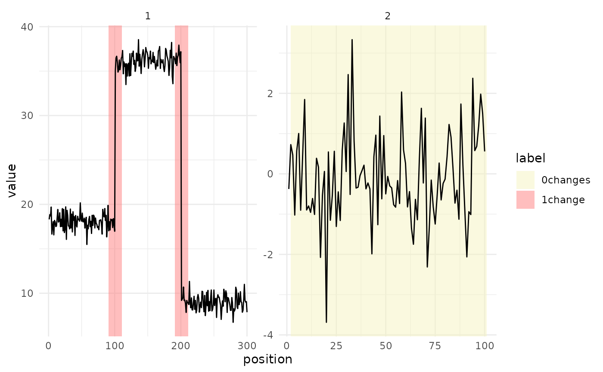

Draws each sequence of a TaskCpt as a line, one facet per row id, with its
label regions shaded by annotation. Changepoint labels use
penaltyLearning::change.colors; peak labels (noPeaks, peakStart,
peakEnd, peaks) use the palette of the PeakError::PeakError() example.
Labels outside these vocabularies are drawn grey.
Every row with role "use" gets a facet, so to plot part of a large task,
filter a copy first: task$clone()$filter(rows).
Usage
# S3 method for class 'TaskCpt'
autoplot(object, theme = ggplot2::theme_minimal(), ...)Arguments
- object
(TaskCpt).
- theme
(
ggplot2::theme())
Theggplot2::theme_minimal()is applied by default.- ...
(ignored).
Examples
library(data.table)
set.seed(36)
toy = data.table(
seq = list(c(rnorm(100, 18), rnorm(100, 36), rnorm(100, 9)), rnorm(100, 0)),
label = list(
data.table(start = c(90, 190), end = c(110, 210), label = c("1change", "1change")),
data.table(start = 1, end = 100, label = "0changes")
)
)
task = TaskCpt$new(
id = "toy", backend = toy,
target = "label", sequence = "seq", label_type = "changepoint"
)
ggplot2::autoplot(task)
